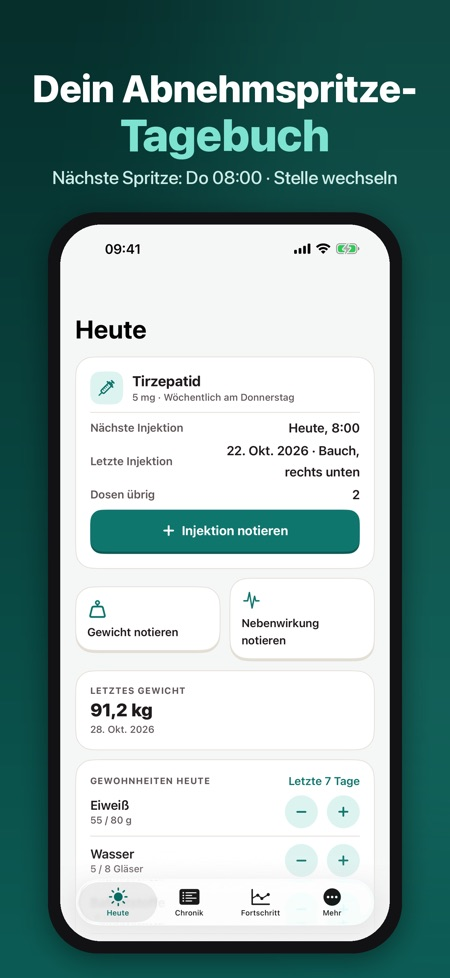
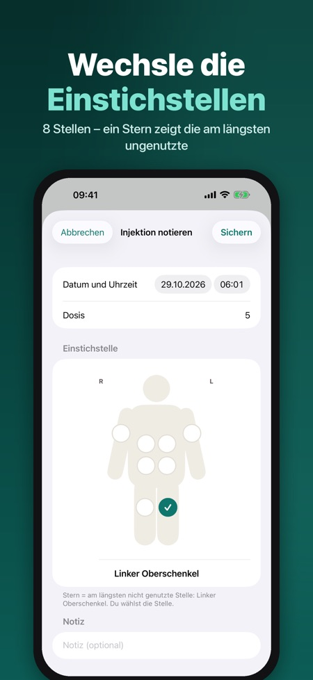
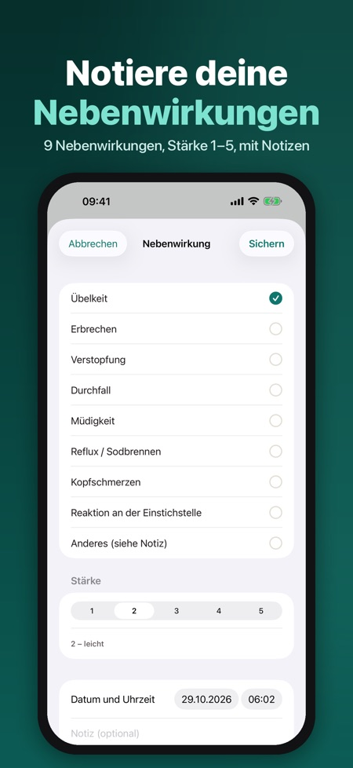

Spritzen, Gewicht, Arztbericht. Ein ruhiges, privates Tagebuch für deine wöchentlichen oder täglichen GLP-1-Injektionen: Einstichstellen, Gewicht, Nebenwirkungen und ein PDF-Bericht für die Praxis.



Ein privates Tagebuch für alle, die GLP-1-Medikamente nach ärztlicher Verordnung anwenden. Notiere jede Injektion, wechsle die Einstichstellen, verfolge dein Gewicht und halte Nebenwirkungen fest – und teile einen übersichtlichen PDF-Bericht mit deiner Arztpraxis.
INJEKTIONSPROTOKOLL
• Wöchentlicher oder täglicher Rhythmus, mit der Dosis laut Verordnung
• Körperkarte mit 8 Stellen (Bauch in vier Feldern, Oberschenkel, Oberarme); ein Stern markiert die am längsten nicht genutzte Stelle
• Restdosen in deinen Pens, mit rechtzeitiger Erinnerung an einen neuen Pen oder ein neues Rezept
ERINNERUNGEN
• Injektionserinnerung an deinem Tag und zu deiner Uhrzeit
• Mitteilungen auf dem Sperrbildschirm zeigen nie Medikamentennamen oder Dosis
GEWICHT UND GEWOHNHEITEN
• Gewicht und Taillenumfang mit Diagramm und Zielgewicht
• Tägliche Zähler für Eiweiß, Wasser und Ballaststoffe, dazu Schritte aus Apple Health
NEBENWIRKUNGEN
• Übelkeit, Erbrechen, Verstopfung, Durchfall, Müdigkeit, Reflux, Kopfschmerzen, Reaktion an der Einstichstelle oder Anderes, Stärke 1–5 und Notizen
• In der Chronik neben deinen Injektionen
BERICHT FÜR DIE ARZTPRAXIS
• PDF für jeden Zeitraum: Dosen, Gewichte und eine Übersicht der Nebenwirkungen, in der App-Sprache
PRIVAT
Kein Konto. Dein Tagebuch bleibt auf deinem iPhone (und nur in Apple Health, wenn du es aktivierst). Deine Gesundheitsdaten werden nie gesendet; nur anonyme Nutzungsstatistik, die du abschalten kannst. Keine Werbung, kein Tracking. Optionale Sperre mit Face ID.
PRO
Pro (Jahresabo oder einmalig lebenslang) bietet den ganzen Verlauf mit Diagrammen, Nebenwirkungen im Verlauf, den PDF-Bericht, Abgleich mit Apple Health und mehrere Medikamente. Ohne Pro bleiben Injektionsprotokoll, Erinnerungen und das Gewicht der letzten 30 Tage.
Die Medikamentenliste enthält Wegovy®, Ozempic®, Mounjaro®, Saxenda®, Trulicity® und Victoza® mit ihren Stärken aus der EMA-Produktinformation, nur damit du deins auswählen kannst. Die App ist ein Tagebuch: keine Dosisempfehlung, keine Empfehlung zur Dosissteigerung, keine Schätzung von Wirkstoffspiegeln und keine Diagnose. Folge immer den Anweisungen deiner Ärztin oder deines Arztes. Nicht mit einem Hersteller verbunden; Marken gehören ihren Inhabern.